Este reportestá dividido pelos seguintes tópicos:
Em primeiro lugar foi obtida a informação referente aos IP's do computador, do telemóvel e do servidor onde se encontra alojada a app.
Os IP's do computador e do telemóvel estão localizados onde deveriam estar conforme se verifica nas imagens abaixo.
| 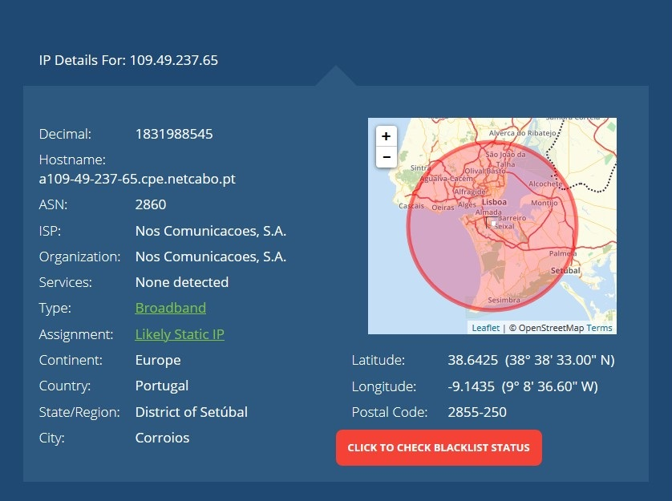 | 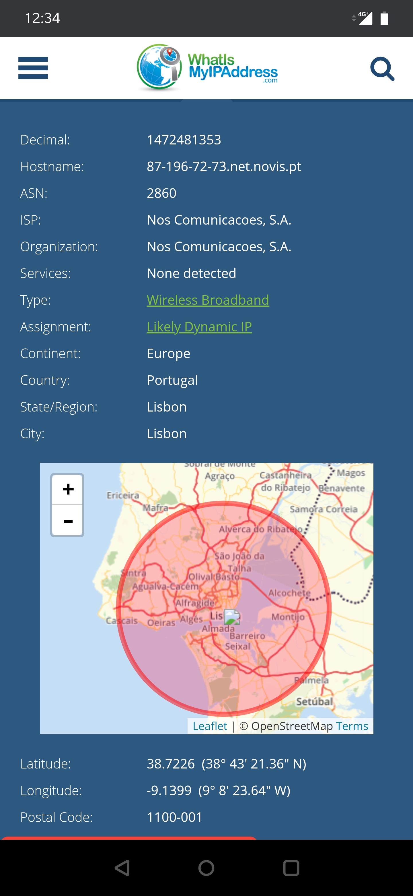 |
|---|---|
| Localização do computador | Localização do telemóvel |
Verificamos que apesar das coordenadas serem exatamente as mesmas nas duas situações, no caso da localização do telemóvel, é apresentado no mapa como estando algures no rio tejo.
De seguida fiz um nslookup do endereço da app para encontrar os IP's associados à mesma. Com o endereço de IP obtive o detalhe da localização do mesmo.
| 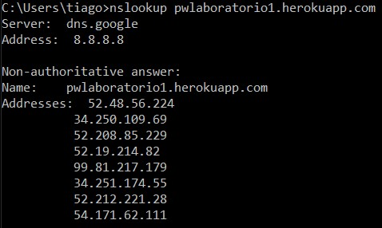 | 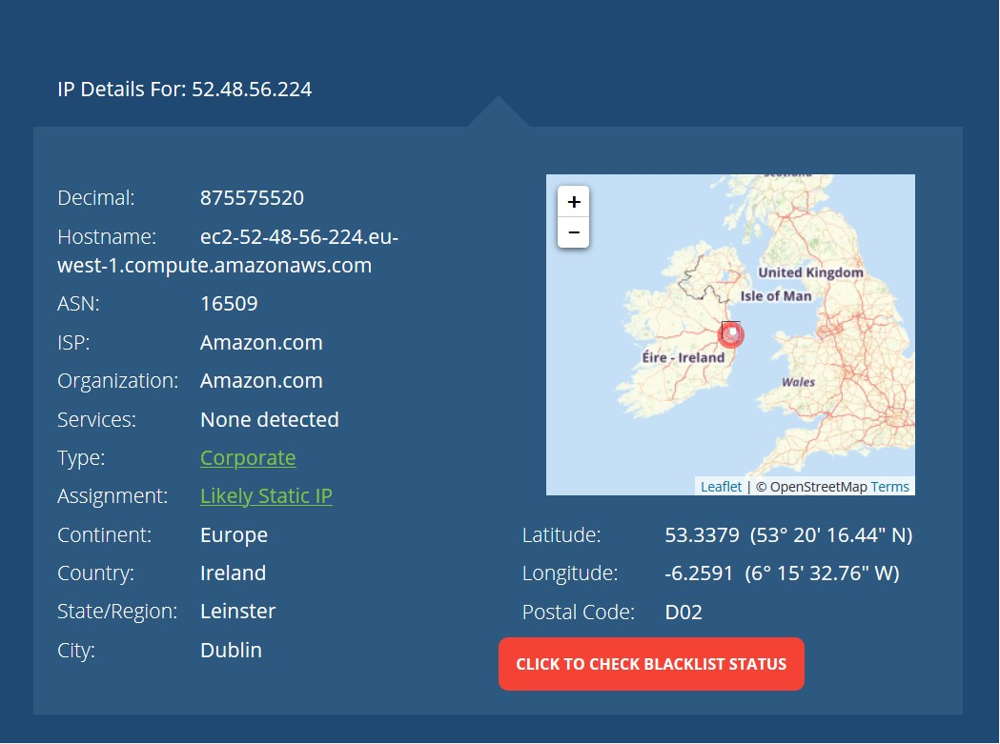 |
|---|---|
| Nslookup do endereço da app | Localização do servidor onde está alojada a app |
Podemos verificar que a app está alojada num servidor da Amazon web services (AWS) localizado na Irlanda.
Em relação ao nslookup verificamos que existem 8 endereços publicos associados ao mesmo mas é uma situação normal, e acontece de forma a criar redundância.
Fiz também um tracerout ao endereço da app mas este perdeu-se a meio. Foi utilizado a ferramenta geotraceroute.com conforme o enunciado.
Segundo a ferramenta geotraceroute.com o ultimo salto foi na Alemanha em Frankfurt mas isto pode-se dever ao tracerout não ter terminado.
| 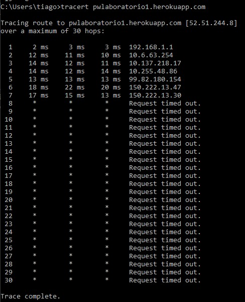 | 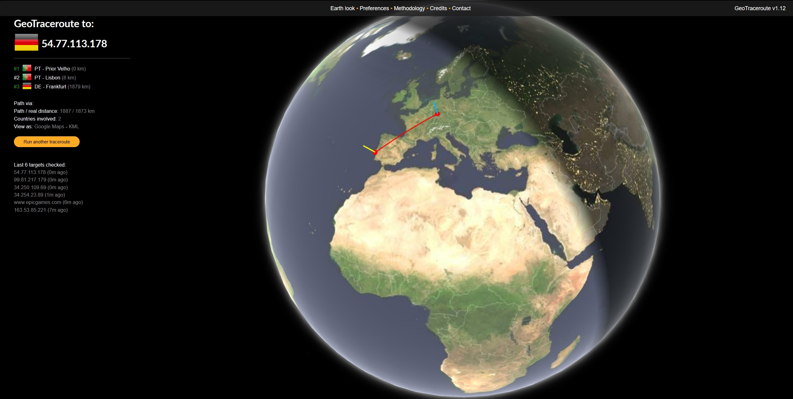 |
|---|---|
| Traceroute do endereço da app | Geotrace do endereço da app |
Quando acedemos à nossa app verificamos que nos é apresentada a seguinte página:
| 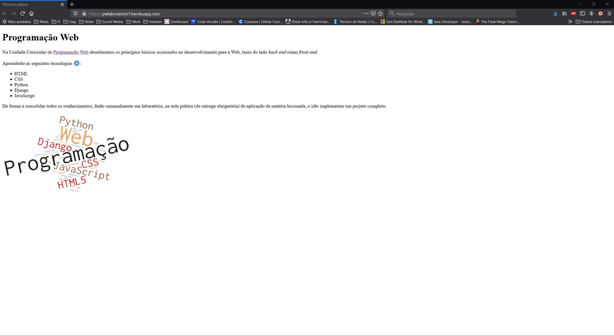 |
|---|
| Index.html |
Ao inspecionarmos o código fonte dessa página verificamos que de facto corresponde ao código html por nós publicado no git.
| 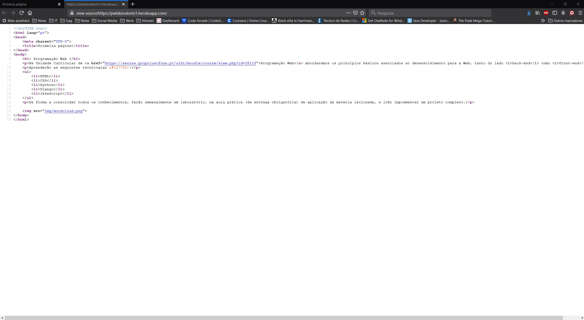 | 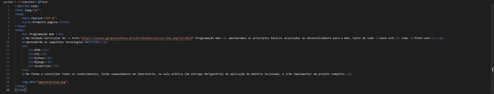 |
|---|---|
| Inspeção do código fonte | Código html submetido no git |
De seguida verificamos com ajuda da ferramenta do chrome (edge chromium) os ficheiros descarregados.
Verificamos pela imagem seguinte que foram feitos dois pedidos ao servidor ambos concluidos com o código http 200 (OK).
Os pedidos foram feitos aos seguintes url's:
De seguida são apresentados os quadros Preview, Headers e Timing de ambos os ficheiros lado a lado respetivamente.
| 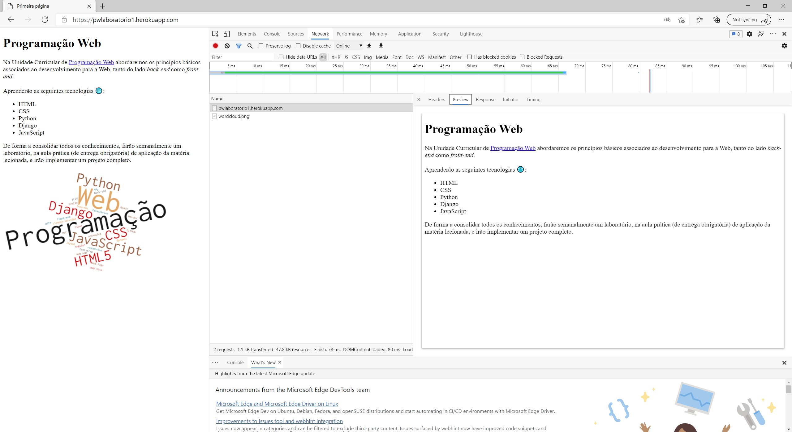 | |
|---|---|
| Preview index.html | Preview wordcloud.png |
Neste separador é feita a pré visualização do ficheiro descarregado. No caso do ficheiro index.html é apresentada a página e no caso do ficheiro wordcloud.png é apresentada a imagem.
| 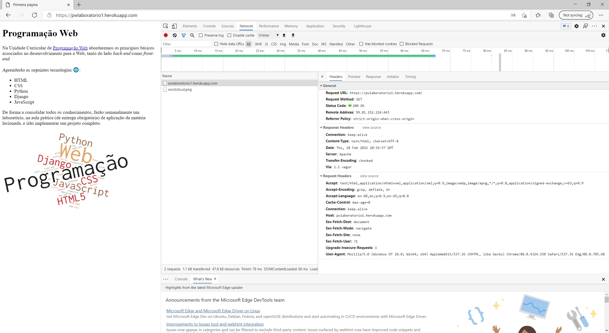 | 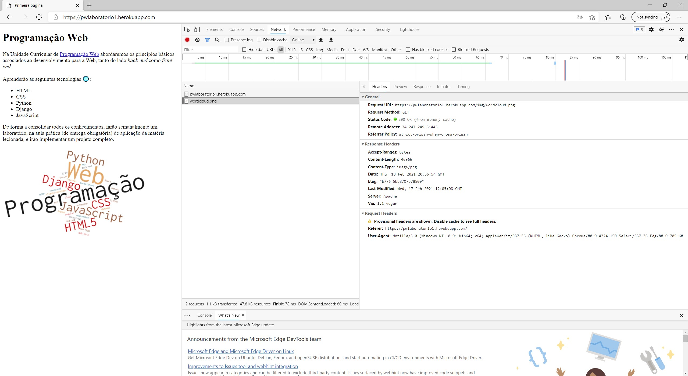 |
|---|---|
| Headers index.html | Headers wordcloud.png |
Neste separador são apresentados os vários headers que se encontram no pedido GET (neste caso) feito ao servidor. Os headers indicam-nos por exemplo o código de estado do pedido, neste caso 200 (OK), qual o metodo (GET), o IP e porto do servidor onde está alojado o ficheiro assim como outras informações relevantes.
| 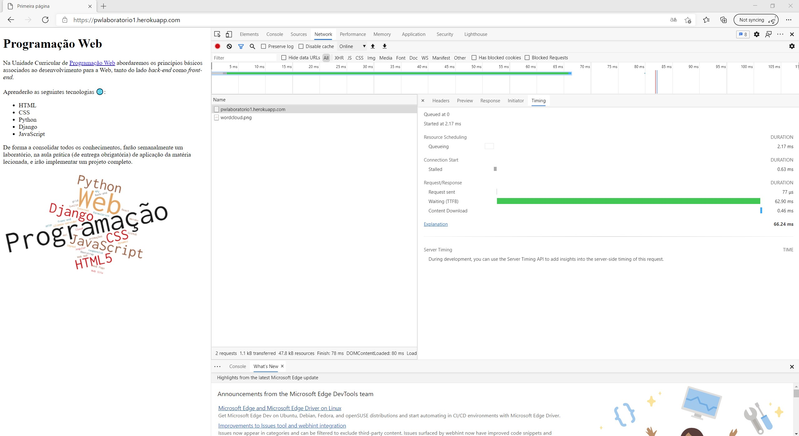 | 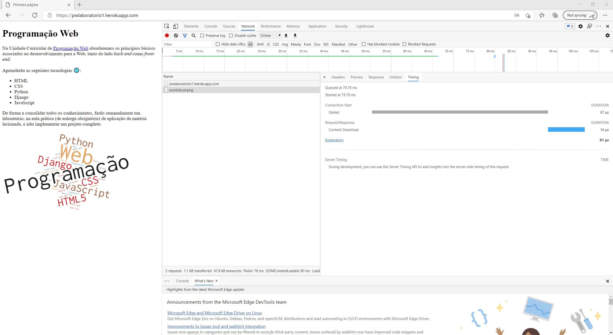 |
|---|---|
| Timings index.html | Timings wordcloud.png |
Neste separador temos a informação referente aos tempos de resposta ao pedido feito, como o tempo que estivemops em queue para iniciar o download do ficheiro e quanto tempo demorou a transferencia.
Para concluir apresentamos a mesma informação para a página da lusofona e os separadores Preview, Headers e Timings para um dos ficheiros.
| 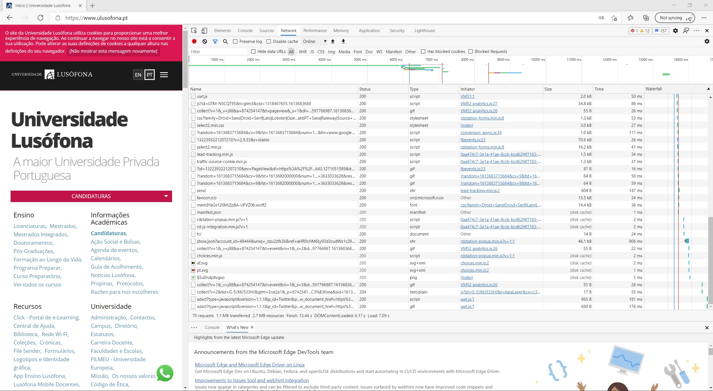 | 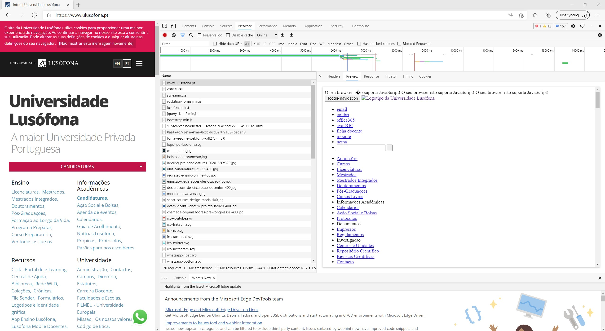 |
|---|---|
| Página da Lusófona | Preview www.ulusofona.pt |
| 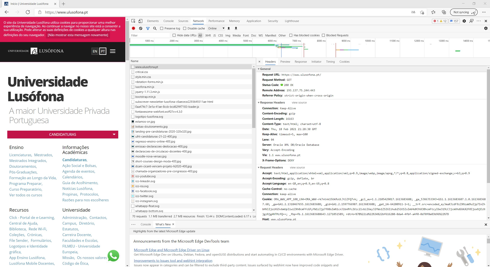 | 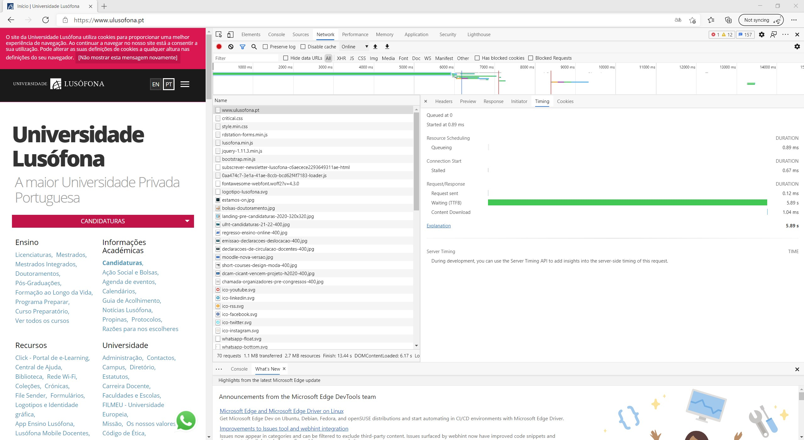 |
|---|---|
| Headers www.ulusofona.pt | Timings www.ulusofona.pt |